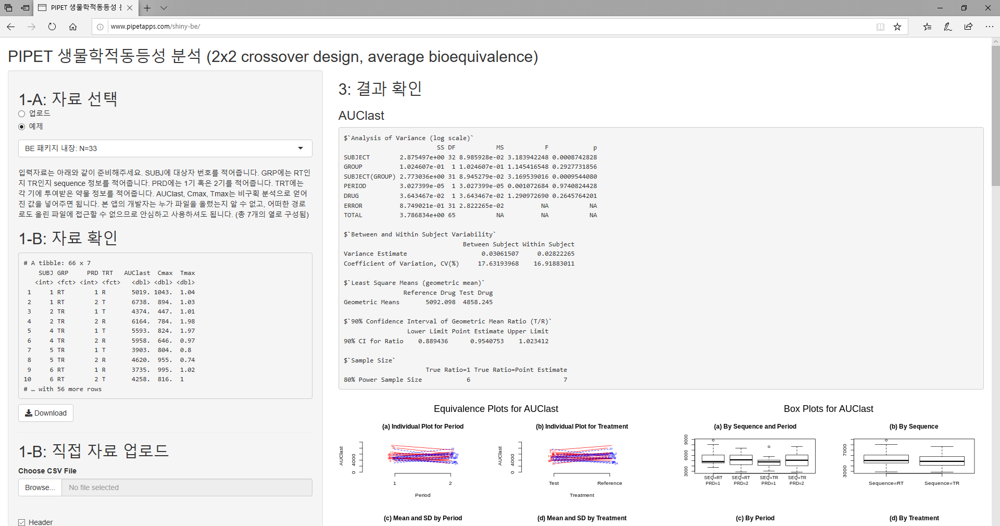

Chapter 3 결과
3.1 NonCompartEdison 앱을 통한 비구획분석
Table 1. An example of the raw concentration-time data used for EDISON Science Apps. The dataset was simulated based on the 2x2 crossover design.
| SUBJ | GRP | PRD | TRT | nTIME | TIME | CONC |
|---|---|---|---|---|---|---|
| 1 | RT | 1 | R | 0 | 0 | 0 |
| 1 | RT | 1 | R | 0.25 | 0.26 | 511.3 |
| 1 | RT | 1 | R | 0.5 | 0.46 | 678.79 |
| 1 | RT | 1 | R | … | … | … |
| 1 | RT | 2 | T | 0 | 0 | 0 |
| 1 | RT | 2 | T | 0.25 | 0.25 | 487.62 |
| 1 | RT | 2 | T | 0.5 | 0.48 | 769.6 |
| … | … | … | … | … | … | … |
| 5 | TR | 1 | T | 0 | 0 | 0 |
| 5 | TR | 1 | T | 0.25 | 0.23 | 382.79 |
| 5 | TR | 1 | T | 0.5 | 0.45 | 477.03 |
| 5 | TR | 1 | T | … | … | … |
| 5 | TR | 2 | R | 0 | 0 | 0 |
| 5 | TR | 2 | R | 0.25 | 0.28 | 596.98 |
| 5 | TR | 2 | R | 0.5 | 0.47 | 832.76 |
| 5 | TR | 2 | R | … | … | … |
| … | … | … | … | … | … | … |
농도-시간 입력 자료(Table 1)는 NonCompartEdison 앱을 통해서 처리되어 약동학 파라미터가 계산되어 표형태의 출력 자료가 된다. (Table 2) 이것이 다시 edisonBE 앱의 입력자료가 되어 생물학적동등성 분석을 위해 쓰이게 된다.
Table 2. The raw pharmacokinetic data calculated by NonCompartEdison App
| SUBJ | GRP | PRD | TRT | AUClast | Cmax | Tmax |
|---|---|---|---|---|---|---|
| 1 | RT | 1 | R | 5018.927 | 1043.13 | 1.04 |
| 1 | RT | 2 | T | 6737.507 | 894.21 | 1.03 |
| 2 | TR | 1 | T | 4373.97 | 447.26 | 1.01 |
| 2 | TR | 2 | R | 6164.276 | 783.92 | 1.98 |
| 4 | TR | 1 | T | 5592.993 | 824.42 | 1.97 |
| 4 | TR | 2 | R | 5958.16 | 646.31 | 0.97 |
| 5 | TR | 1 | T | 3902.59 | 803.7 | 0.8 |
| 5 | TR | 2 | R | 4620.156 | 955.3 | 0.74 |
3.2 edisonBE 앱을 통한 생물학적동등성 판단
약동학 파라미터가 입력 자료가 되어 edisonBE 앱을 통해 처리되고 생물학적동등성 판단을 위한 ANOVA 표, 변이 (variability), Least square mean (LSM), geometric mean ratio (GMR)의 90% 신뢰구간, 샘플 수의 계산이 수행된다. (Figure 2) 본 자료로 계산한 AUClast는 생물학적 동등성 기준을 만족하고 있다.

Figure 2. Output format of bioequivalence tests performed by BE R package.
3.3 90% 신뢰구간의 SAS 결과값과 비교
위 과정으로 얻어진 계산값은 가장 정확하게 생물학적 동등성을 평가하고 있어 표준으로 사용되는SAS 소프트웨어 결과값과 완전히 동일하였다. (Table 3)
Table 3. Comparison of 90% confidence interval for the ratio of the geometric means of (A) AUClast and (B) Cmax
A
| Analysis | Lower Limit | Point Estimate | Upper Limit |
|---|---|---|---|
| EDISON Science App | 0.88944 | 0.95408 | 1.02341 |
| SAS: PROC GLM | 0.88944 | 0.95408 | 1.02341 |
| SAS: PROC MIXED | 0.88944 | 0.95408 | 1.02341 |
B
| Analysis | Lower Limit | Point Estimate | Upper Limit |
|---|---|---|---|
| EDISON Science App | 0.90136 | 0.97984 | 1.06515 |
| SAS: PROC GLM | 0.90136 | 0.97984 | 1.06515 |
| SAS: PROC MIXED | 0.90136 | 0.97984 | 1.06515 |
3.4 샘플 수 계산
BE 패키지를 통한 분석은 Between subject CV값과 Within Subject CV를 계산한다. 이에 근거하여 80%의 파워로 계산한 샘플수 계산을 수행하며 T/R 비 (ratio) 가 1일 때와 점추정치일 경우를 각각 계산하여 결과를 출력한다. 본 자료로 계산한 AUClast의 개인간 (between subject) CV값은 17.63%, 개인내 (within subject) CV값은 16.92%인 것을 알 수 있고 80% 파워로 계산한 샘플 수는 GMR이 1인 경우 6명, 점추정치인 0.95와 같은 경우 7명이 나오게 된다.
## True Ratio=1 True Ratio=Point Estimate
## 80% Power Sample Size 6 73.5 R 샤이니 앱
shiny-be는 비구획분석과 생물학적동등성 분석을 웹브라우저에서 할 수 있는 응용 소프트웨어로 http://pipetapps.com/shiny-be 에서 무료로 서비스 하고 있다.

Figure 3. R 샤이니 앱, shiny-be 접속 화면. http://pipetapps.com/shiny-be